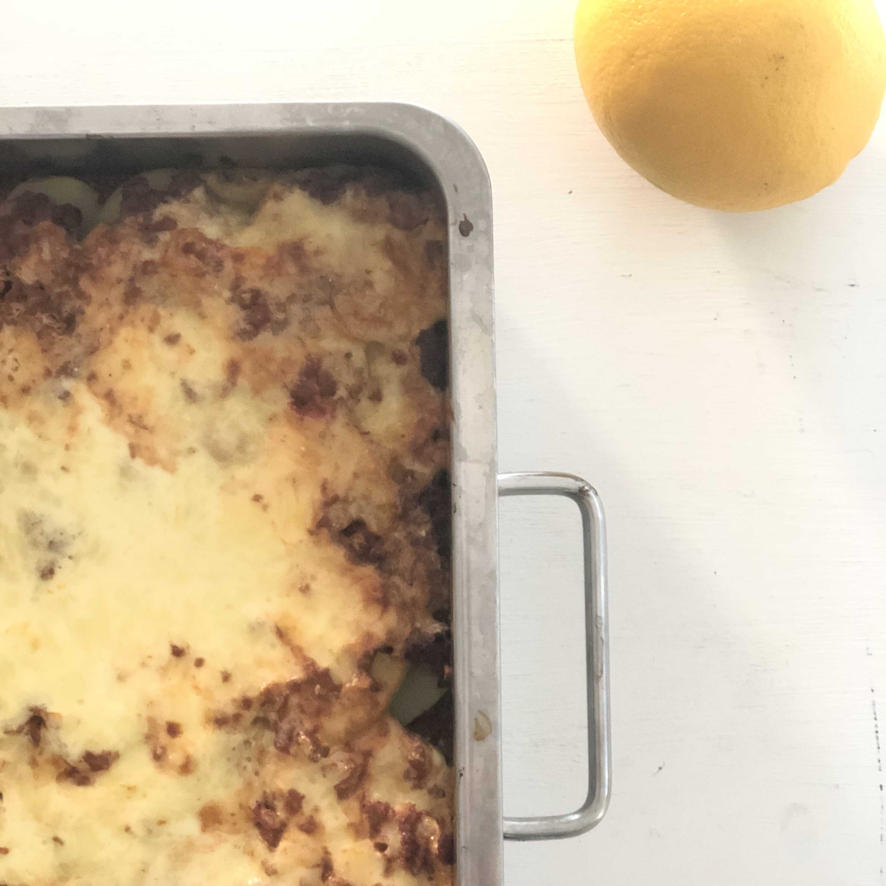

Krämig vegetarisk gratäng

Fet men god
6-8 portioner
1 kg potatis - skala ev. skiva 1 cm
koka 8-10 min
2 lök
4 vitlök
finhacka, bryn i olja i stor kastrull
600 g fryst sojafärs
1 msk spiskummin
1 msk paprikapulver
tillsätt, värm
1,5 msk vitvinsvinäger
1 dl vatten, ev.
2 pkt tomatkross
1,5 tsk salt
2 krm svartpeppar
tillsätt, puttra 5 min
200 g riven ost
4 dl crème fraîche
blanda i separat bunke
i form:
-> 1/2 sojafärs,
-> alla potatisskivor,
-> 1/2 sojafärs,
-> crème sås
15-20 min ugn, fin färg